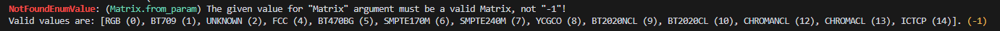

Common Errors
This section is incomplete!
This section is a stub. You can help us by expanding it.
Below is a list of common errors, their (presumed) causes, and how to resolve them.
Warning
This page may prove useful for simple troubleshooting, but if your error is not on here or the given solution doesn't resolve it, you may be able to find a better solution by Googling or by posting your stack trace or traceback in the JET Discord server.
Generic Errors
Errors that are relatively generic and can occur with any script or package.
| Error | Meaning |
|---|---|
| AttributeError: No attribute with the name '[plugin]' exists. Did you mistype a plugin namespace or forget to install a plugin? | The specified Vapoursynth plugin doesn't exist. Check for typos and/or ensure the required plugin is installed. |
| ModuleNotFoundError: No module named '[package]' | The specified Python package doesn't exist. Check for typos and/or ensure the required package is installed. |
| ImportError: cannot import name '[name]' from '[package]' | The specified functions, class, or variables cannot be imported from the given package. Check for typos and/or ensure the required packages is installed, or that the thing you're trying to import has been properly exported. |
| ERROR: pip's dependency resolver does not currently take into account all the packages that are installed. | Warning that indicate pip might not be considering all installed packages when resolving dependencies. This is usually not a critical error, but is indicative of conflicts or inconsistencies in package versions. |
Filter-specific Errors
Common errors users run into with some specific filters.
| Error | Meaning |
|---|---|
| vapoursynth.Error: Expr: All inputs must have the same number of planes and the same dimensions, subsampling included | The given clips have a different combination of dimensions/resolutions and/or subsampling. Thrown in std.Expr. This can be fixed by resampling all the inputs to the same dimensions and subsampling format. |
| vapoursynth.Error: lsmas: failed to open file. | The given file could not be found. Check for typos and/or ensure the file exists in the provided location. |
JET-specific Errors
Special errors raised by JET and its custom exceptions. JET errors are commonly formatted like this:
Example
For example, the following code will throw this error:
Example

| Error | Meaning |
|---|---|
| FileNotExistsError: (source) [PATH/TO/VIDEO] | The given file could not be found. Check for typos and/or ensure the file exists in the provided location. |